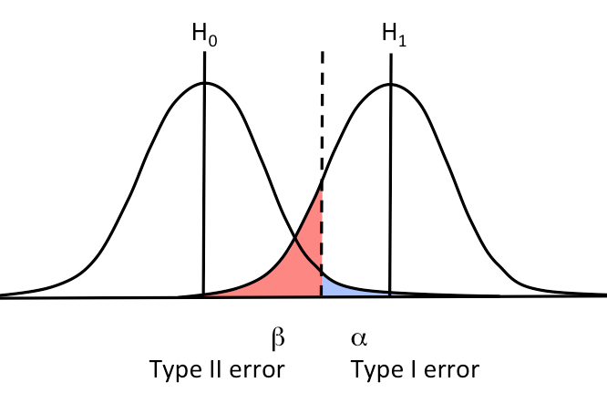
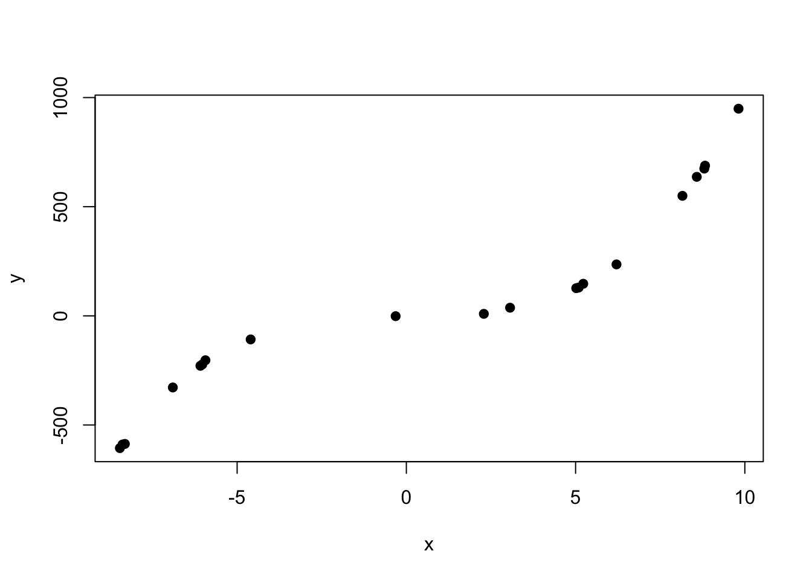
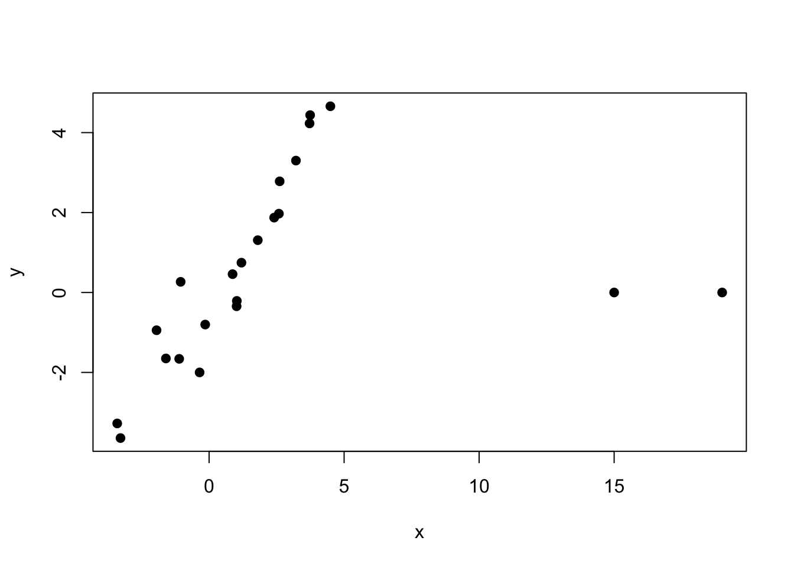
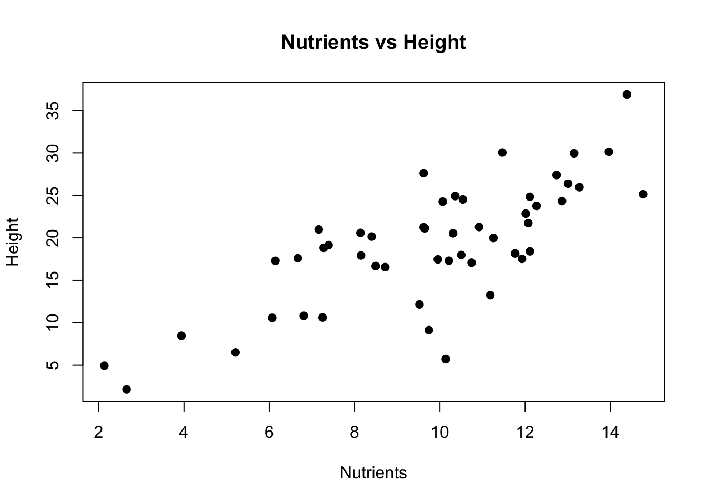
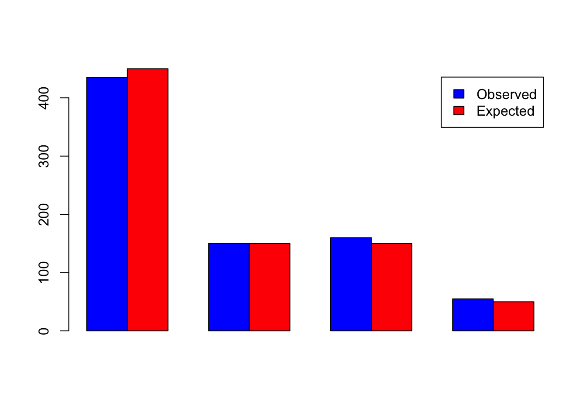

In statistical testing, we will operate with hypotheses.There are two basic hypotheses:
Null Hypothesis (\(H_0\)) - There is no effect in the population.
Alternative Hypothesis (\(H_A\)) - There is a effect in the population.
Usually we are interested in having an effect, as it means some discovery, and rejecting null hypothesis
Test result
The tests result in test statistic and the p-value .
Each test have its formula to calculate called test statistic. This value has its own distribution
(e.g. t-distribution for the t-statistic from t-test).
p-value - the probability that, given a true null hypothesis, your observations will result in such or more extreme value of test statistic
The smaller the p-value, the less likely we are to get our result under the null hypothesis, which states that there is no effect.
Type I and II errors
The probability of obtaining results under the null hypothesis, which is equal to the p-value, represents the probability that our results will be obtained at random.
Type I error
Error of rejecting \(H_0\) when \(H_0\) is true.
Probability of Type I error (\(\alpha\)) (= p-value after testing)
Type II error
Error of accepting \(H_0\) when \(H_0\) is not true.
Probability of Type II error (\(\beta\))

Significance level
Before testing we must define value \(\alpha\) named significance level- predetermined threshold of rejecting\(H_0\).
For example we set \(\alpha = 0.05\) and got p-value < \(\alpha\):
We reject the null hypothesis at the \(\alpha = 0.05\) significance level, indicating that there is sufficient evidence to conclude that the observed result is unlikely to have occurred under the null hypothesis.
P.S. Thus we fix the error of the first type, but the error of the second type can still be large. There is a value\(1-\beta\)called the power of the test. The smaller is the probability of type II error, the more powerful is the test.
One Sample t-test
data: x
t = 4.3674, df = 9, p-value = 0.001804
alternative hypothesis: true mean is not equal to 0
95 percent confidence interval:
1.293423 4.073024
sample estimates:
mean of x
2.683224
Welch Two Sample t-test
data: x1 and x2
t = 2.4468, df = 12.848, p-value = 0.02958
alternative hypothesis: true difference in means is not equal to 0
95 percent confidence interval:
0.413468 6.715064
sample estimates:
mean of x mean of y
1.715416 -1.848850
Welch Two Sample t-test
data: height by group
t = -5.87, df = 57.853, p-value = 2.247e-07
alternative hypothesis: true difference in means between group Shade and group Sunlight is not equal to 0
95 percent confidence interval:
-3.449780 -1.695213
sample estimates:
mean in group Shade mean in group Sunlight
12.35994 14.93244
Non-Parametric Alternative for independent samples
Since the t-test requires calculation of the mean, it is sensitive to outliers. Therefore, it is better to use a non-parametric approach
Mann-Witney test(also known asWilcoxonrank-sum test)
Hypotheses
The test does not directly compare means or medians!
Null Hypothesis (\(H_0\)): The two populations (from which the samples are drawn) have the same distribution (i.e., the probability distributions are identical).
Alternative Hypothesis (\(H_A\)): The two populations have different distributions, typically focusing on a stochastic ordering (i.e., one distribution tends to yield larger values than the other).
If \(X\) comes from population 1 and \(Y\) comes from population 2, the null hypothesis often implies:
Paired t-test
data: before and after
t = 4.0142, df = 19, p-value = 0.0007418
alternative hypothesis: true mean difference is not equal to 0
95 percent confidence interval:
1.564129 4.972288
sample estimates:
mean difference
3.268208
Non-Parametric Alternative for dependent samples
Wilcoxon signed-rank test
Hypotheses
Testing medians, not means
Null Hypothesis (\(H_0\)): The median difference between paired observations is zero (i.e., the distribution of the differences is symmetric around zero).
Alternative Hypothesis (\(H_A\)): The median difference between paired observations is not zero (the distribution of differences is not symmetric around zero)
Wilcoxon signed rank exact test
data: sample_before and sample_after
V = 70, p-value = 0.2024
alternative hypothesis: true location shift is not equal to 0
Categorical data testing
Chi-Square (\(\chi^2\)) Test (of independence)
Used to test relationships between categorical variables.
Assumptions
Frequencies in each cell are sufficiently large (> 5).
Hypotheses
Null Hypothesis (\(H_0\)): Two categorical variables are independent
Alternative Hypothesis (\(H_A\)): Two categorical variables are dependent
Formula
\(\chi^2 = \sum \frac{(O_i - E_i)^2}{E_i}\) where (\(O_i\)) are the observed frequencies, and (\(E_i\)) are the expected frequencies.
Parameter of \(\chi^2\)-distribution
Degrees of freedom \(df\)
(number of rows in contingency table - 1) * (number of columns in contingency table - 1)
Outcome
Knockout Disease No disease
Yes 1 3
No 4 2
Testing
fisher.test(contingency_table)
Fisher's Exact Test for Count Data
data: contingency_table
p-value = 0.5238
alternative hypothesis: true odds ratio is not equal to 1
95 percent confidence interval:
0.002560407 4.586187647
sample estimates:
odds ratio
0.2033268
\(p.value > 0.05\) - We cannot reject \(H_0\) about absence of association between categorical variables.
Correlation analysis
Correlation analysis measures the strength and direction of a linear relationship between two variables. The most commonly used correlation measure is the Pearson’s correlation coefficient which indicates linearrelationship
The problems with Pearson correlation are that it is not suitable for “strange” non-linear relationships, non-normally distributed traits and data with outliers.
Spearman correlation
Suitable for non-linear relationships
Less sensitive to outliers
Calculated based on ranks
Examples
Non-normal
x =runif(20, -10, 10)y = x ^3+rnorm(20,0,5)plot(x,y, pch=19)

cor(x,y)
[1] 0.9398057
cor(x,y, method ="spearman")
[1] 1
# cor(x,y, method = "kendall")
With outliers
x =c(rnorm(20,0,3), c(15, 19))y =c(x[1:20] +c(rnorm(20,0,1)), 0, 0)plot(x,y, pch=19)

cor(x,y)
[1] 0.3340808
cor(x,y, method ="spearman")
[1] 0.7918667
# cor(x,y, method = "kendall")
By conducting correlation analysis, we only answered the question “Is there a significant relationship between the values?”. Can we, using this knowledge, predict the values of one variable based on the second variable? Yes!
Linear Regression
Used to predict a continuous outcome based on one or more predictors.
Homoscedasticity: Residuals have constant variance (~) - \(\sigma^2(\epsilon) = const\)
Mean of residuals is close to zero
Stricter assumption: residuals are normally distributed around zero (~) - \(\epsilon \sim Norm(0, \sigma^2)\)
This assumption is equivalent to normality of \(y\)
Observations \(y_i\) are independent (not correlated) (~)
Linearity: The relationship between variables is considered to be linear.
(~) denotes assumptions needed for hypotheses testing and confidence estimation only
Simple linear regression
Linear regression model with one dependent\(y\) (response) and one independent variable \(x\) (predcitor). Simple line which estimate linear relationship between \(x\) and \(y\).
Formula of model
\(y_{pred} = \beta_0 + \beta_1x_1\)
Can plant height be predicted based on soil nutrient levels?
Data
nutrients <-rnorm(50, mean =10, sd =3)height <-2* nutrients +rnorm(50, mean =0, sd =5)data_plant_nutrient <-data.frame(nutrients, height)
plot(nutrients, height, main ="Nutrients vs Height",xlab ="Nutrients", ylab ="Height",pch=19)

Model creation
model <-lm(height ~ nutrients, data = data_plant_nutrient)model
For simple linear regression is equal to squared Pearson correlation coefficient \(\rho^2\)
summary_model$r.squared
[1] 0.5692965
Adjusted R-squared:
Penalizes for the number of predictors to avoid overestimating the model’s explanatory power when additional (possibly irrelevant) predictors are added
A higher F-statistic indicates that the model’s explained variability (MSR - Regression mean squares) is large relative to the unexplained variability (MSE - Mean of squares error), suggesting that the regression model is capturing a significant relationship.
F-test
anova(model)
Analysis of Variance Table
Response: height
Df Sum Sq Mean Sq F value Pr(>F)
nutrients 1 1444.4 1444.40 63.446 2.485e-10 ***
Residuals 48 1092.8 22.77
---
Signif. codes: 0 '***' 0.001 '**' 0.01 '*' 0.05 '.' 0.1 ' ' 1
\(\beta_1\): Effect of \(x_1\) on \(y\) when \(x_2=0\).
\(\beta_2\): Effect of \(x_2\) on \(y\) when \(x_1=0\).
\(\beta_3\): Interaction coefficient, showing how the relationship between \(x_1\) and \(y\) changes as \(x_2\) changes.
You should include an interaction if you hypothesize that the relationship between one predictor and the dependent variable changes depending on the level of another predictor. For example, the effect of a drug might vary depending on the age of the patient.
barplot(rbind(observed, expected), beside =TRUE, col =c("blue", "red"), legend =c("Observed", "Expected"))

Code
chisq.test(x=observed, p=expected/sum(expected))
Chi-squared test for given probabilities
data: observed
X-squared = 1.6667, df = 3, p-value = 0.6444
p - expected proportions (instead of values)
\(p.value > 0.05\) and it means that the two sets of frequencies are likely to belong to the same distribution or in other words: the observed values are not significantly different from the expected values